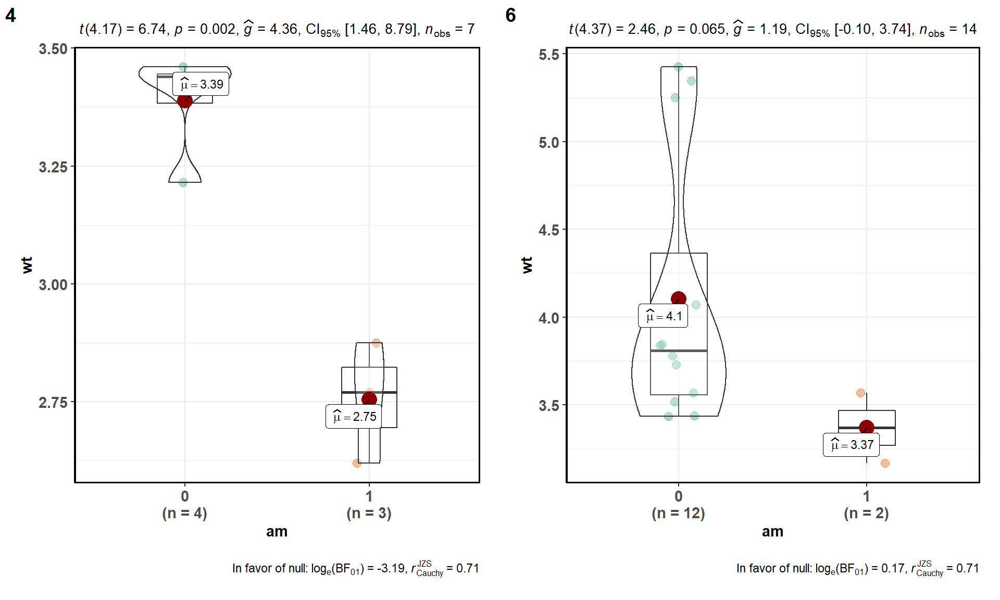

combine_plots
Indrajeet Patil
2020-10-29
Source:vignettes/web_only/combine_plots.Rmd
combine_plots.Rmd
Combining plots with combine_plots
ggstatsplot contains a “helper” function named combine_plots to help you combine several plots into one plot or add a combination of title, caption, and annotation texts with suitable default parameters. It is a wrapper around cowplot::plot_grid(). Some examples below.
Note Before: If you have just one grouping variable and you’d like a plot for each factor of this variable the grouped_ variants (https://indrajeetpatil.github.io/ggstatsplot/reference/index.html) of all ggstatsplot functions will allow you do to this. They specifically use the combine_plots function under the covers.
Combining multiple plots: Example-1 using dplyr::group_map
The easiest way to run the same ggstatsplot operation across multiple grouping variables is by using dplyr::group_map functions and then - of course - one would like to combine these plots in a single plot.
# libraries
set.seed(123)
library(tidyverse)
# creating a list of plots
p_list <- mtcars %>%
dplyr::filter(.data = ., cyl != 4) %>%
dplyr::group_by(.data = ., cyl) %>%
dplyr::group_map(
.f = ~ ggstatsplot::ggbetweenstats(
data = .,
x = am,
y = wt,
messages = FALSE
))
# combining plots
cowplot::plot_grid(
plotlist = p_list,
labels = rlang::set_names(levels(as.factor(mtcars$cyl)))
)
Combining multiple plots: Example-2 using purrr
The full power of ggstatsplot can be leveraged with a functional programming package like purrr which can replace many for loops, is more succinct, and easier to read. Consider purrr as your first choice for combining multiple plots.
An example using the iris dataset is provided below. Imagine that we want to separately plot the linear relationship between sepal length and sepal width for each of the three species but combine them into one consistent plot with common labeling and as one plot. Rather than call ggscatterstats three times and gluing the results or using cowplot directly, we’ll create a tibble called plots using purrr::map then feed that to combine_plots to get our combined plot.
# for reproducibility
set.seed(123)
library(ggstatsplot)
# creating a list column with `ggstatsplot` plots
plots <- iris %>%
dplyr::mutate(.data = ., Species2 = Species) %>% # just creates a copy of this variable
dplyr::group_by(.data = ., Species) %>%
tidyr::nest(.) %>% # a nested dataframe with list column called `data`
dplyr::mutate(
.data = .,
plot = data %>%
purrr::map(
.x = .,
.f = ~ ggstatsplot::ggscatterstats(
data = .,
x = Sepal.Length,
y = Sepal.Width,
xfill = "#0072B2",
yfill = "#009E73",
ggtheme = ggthemes::theme_fivethirtyeight(),
ggstatsplot.layer = FALSE,
messages = FALSE, # turns off warnings and notes messages
marginal.type = "boxplot",
title =
glue::glue("Species: {.$Species2} (n = {length(.$Sepal.Length)})")
)
)
)
# display the new object (notice that the class of the `plot` list column is
# S3: ggExtraPlot)
plots
#> # A tibble: 3 x 3
#> # Groups: Species [3]
#> Species data plot
#> <fct> <list> <list>
#> 1 setosa <tibble [50 x 5]> <ggExtrPl>
#> 2 versicolor <tibble [50 x 5]> <ggExtrPl>
#> 3 virginica <tibble [50 x 5]> <ggExtrPl>
# creating a grid with cowplot
ggstatsplot::combine_plots(
plotlist = plots$plot,
nrow = 3,
ncol = 1,
title.text = "Relationship between sepal length and width for each Iris species",
title.size = 14,
caption.text = expression(
paste(
italic("Note"),
": Iris flower dataset was collected by Edgar Anderson.",
sep = ""
),
caption.size = 12
)
)
Combining multiple plots: Example-3 with plyr
Another popular package for handling big datasets is plyr, which allows us to repeatedly apply a common function on smaller pieces and then combine the results into a larger whole.
In this example we’ll start with the gapminder dataset. We’re interested in the linear relationship between Gross Domestic Product (per capita) and life expectancy in the year 2007, for all the continents except Oceania. We’ll use dplyr to filter to the right rows then use plyr to repeat the ggscatterstats function across each of the 4 continents remaining. The result is of that is a list of plots called plots. We then feed plots to the combine_plots function to merge them into one plot. We will call attention to the countries which have very low life expectancy (< 45 years) by labeling those countries when they occur.
library(plyr)
library(gapminder)
# for reproducibility
set.seed(123)
# let's have a look at the structure of the data
dplyr::glimpse(gapminder::gapminder)
#> Rows: 1,704
#> Columns: 6
#> $ country <fct> Afghanistan, Afghanistan, Afghanistan, Afghanistan, Afgha...
#> $ continent <fct> Asia, Asia, Asia, Asia, Asia, Asia, Asia, Asia, Asia, Asi...
#> $ year <int> 1952, 1957, 1962, 1967, 1972, 1977, 1982, 1987, 1992, 199...
#> $ lifeExp <dbl> 28.801, 30.332, 31.997, 34.020, 36.088, 38.438, 39.854, 4...
#> $ pop <int> 8425333, 9240934, 10267083, 11537966, 13079460, 14880372,...
#> $ gdpPercap <dbl> 779.4453, 820.8530, 853.1007, 836.1971, 739.9811, 786.113...
# creating a list of plots
plots <- plyr::dlply(
.data = dplyr::filter(
gapminder::gapminder,
year == 2007, continent != "Oceania"
),
.variables = .(continent),
.fun = function(data) {
ggstatsplot::ggscatterstats(
data = data,
x = gdpPercap,
y = lifeExp,
xfill = "#0072B2",
yfill = "#009E73",
label.var = "country",
label.expression = "lifeExp < 45",
title = glue::glue("Continent: {data$continent}"),
marginal = FALSE
) +
ggplot2::scale_x_continuous(labels = scales::comma)
}
)
# combining individual plots
ggstatsplot::combine_plots(
plotlist = plots,
title.text = "Relationship between GDP (per capita) and life expectancy",
nrow = 2
)
Adding additional details to plots
The combine_plots function can also be useful for adding additional textual information that can not be added by making a single call to a ggstatsplot function via the title, subtitle, or caption options. For this example let’s assume we want to assess the relationship between a movie’s rating and its budget from the Internet Movie Database using polynomial regression.
ggcoefstats will do most of the work, including the title, subtitle, and caption. But we want to add at the bottom an annotation to show the formula we are using for our regression. combine_plots allows us to add sub.text = to accomplish that task as shown in the resulting plot.
library(ggstatsplot)
ggstatsplot::combine_plots(
# preparing the plot with ggstatsplot function
# let's use only 20% of data to speed up the process
ggstatsplot::ggcoefstats(
x = stats::lm(
formula = rating ~ stats::poly(budget, degree = 3),
data = dplyr::sample_frac(tbl = ggstatsplot::movies_long, size = 0.2),
na.action = na.omit
),
exclude.intercept = FALSE,
title = "Relationship between movie budget and IMDB rating",
subtitle = "Source: Internet Movie Database",
ggtheme = ggplot2::theme_gray(),
stats.label.color = c("#CC79A7", "darkgreen", "#0072B2", "red")
) +
# modifying the plot outside of ggstatsplot using ggplot2 functions
ggplot2::scale_y_discrete(
labels = c(
"Intercept (c)",
"1st degree (b1)",
"2nd degree (b2)",
"3rd degree (b3)"
)
) +
ggplot2::labs(y = "term (polynomial regression)"),
# adding additional text element to the plot since title, subtitle, caption are all already occupied
sub.text = expression(
paste(
"linear model: ", bolditalic(y),
" ~ ",
italic(c) + italic(b)[1] * bolditalic(x) + italic(b)[2] * bolditalic(x)^
2 + italic(b)[3] * bolditalic(x)^3,
sep = ""
)
),
sub.size = 12
)
Suggestions
If you find any bugs or have any suggestions/remarks, please file an issue on GitHub: https://github.com/IndrajeetPatil/ggstatsplot/issues
Session Information
For details, see- https://indrajeetpatil.github.io/ggstatsplot/articles/web_only/session_info.html